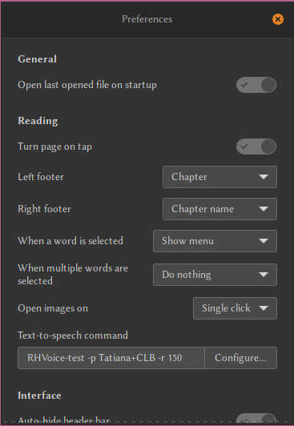

Установка.
alias a="yay"
a -S rhvoice-voice-arina rhvoice-language-russian speech-dispatcher
Проверка и настройка.
echo "a -S rhvoice-voice-arina rhvoice-language-russian speech-dispatcher"
Чтобы записать фразу в файл можно использовать следующую команду:
printf 'Добро пожаловать в Linux, Саша' | RHVoice-test -p Tatiana+CLB
=== Голоса ===
Русский
aleksandr (муж.)
anna (жен.)
elena (жен.)
irina (жен.)
Английский
alan (муж.)
clb (жен.)
slt (жен.)
Грузинский
natia (жен.)
Эсперанто
spomenka (жен.)
https://github.com/RHVoice/RHVoice/blob/master/doc/ru/Configuration-file.md
https://github.com/RHVoice/RHVoice/blob/master/doc/ru/Configuration-file.md
Пример конфигурационного файла.
Путь файла:
/usr/local/share/RHVoice/voices
или
/usr/local/RHVoice/rhvoice.conf
###################################
#
# Настройка speech text in Foliate
#
###################################
Нужно в настройках программы в поле text-to-speech command, ввести:
RHVoice-test -p Tatiana+CLB -r 150
где,
-r 150 скорость чтения (100 по умолчанию)
